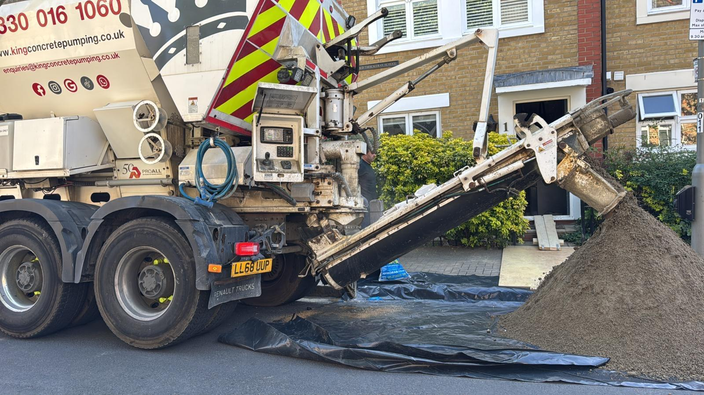
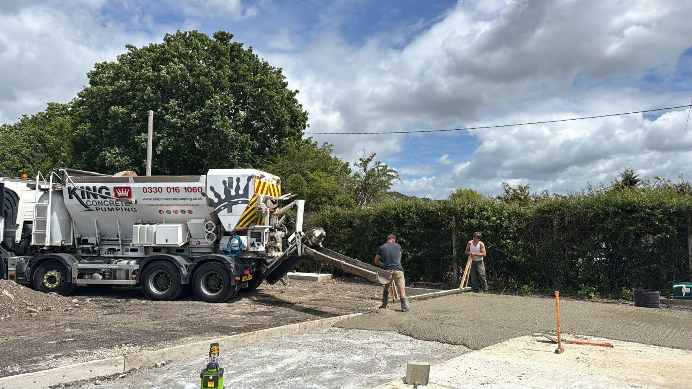
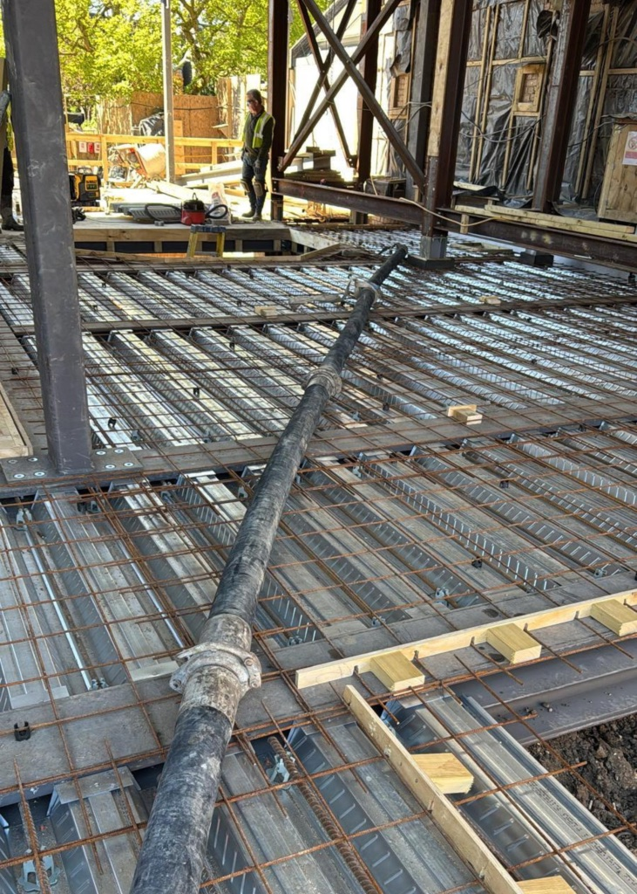
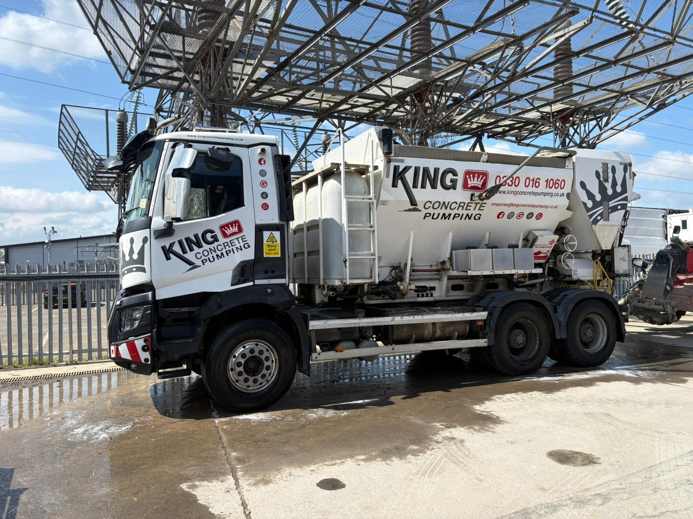
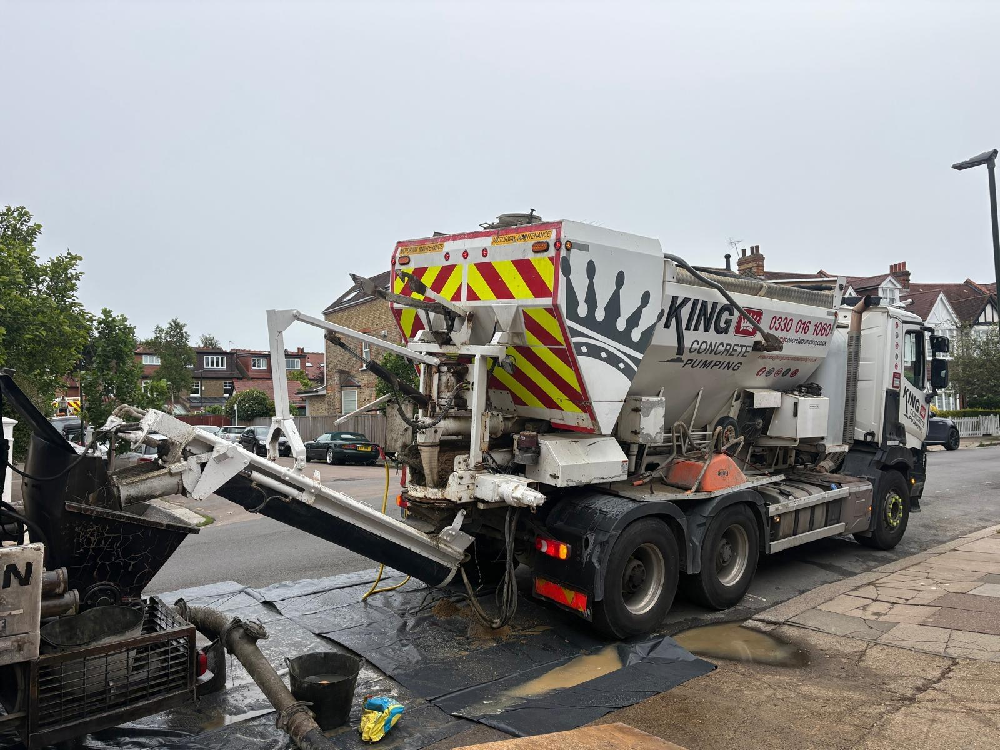
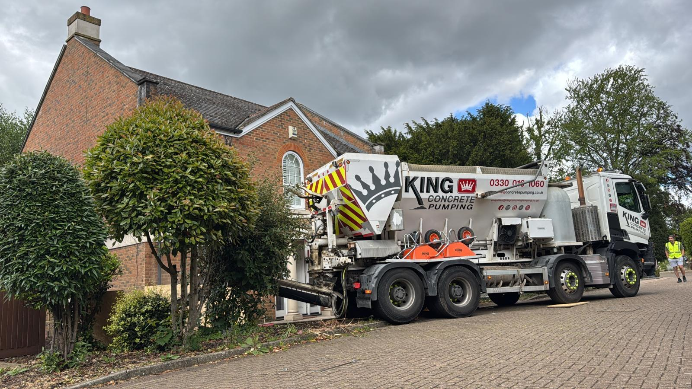

Ready Mix Concrete
Consistent, batch-quality ready mix concrete delivered and pumped across Worthing, ready to place the moment it arrives.
Read More
Family-Run Concrete Pumping Specialists
From house extensions in Broadwater to commercial pours in the town centre, we place concrete quickly, safely and exactly where it is needed across Worthing and the surrounding areas of Goring-by-Sea, Durrington, Lancing and Ferring. Family run, fully trained, and ready when your site is.

About Us
King Concrete Pumping is a family-run team that treats every Worthing job as if it were our own. Builders, developers and homeowners across the area call us because we turn up on time, set up cleanly and place concrete without fuss, whether it is a back-garden extension in Ferring or a commercial slab near the high street.
We have built our name on doing the simple things properly: clear advice before the pour, the right pump for the access, and a tidy site when we leave. That reliability is why so much of our work around Worthing comes from repeat customers and recommendations.
How We Work
We check access, distances and levels so the right pump and crew arrive ready for your Worthing site.
Concrete is pumped exactly where it is needed, at pace, with none of the mess of barrowing by hand.
We finish tidy, clear our equipment away and leave your site ready for the next stage of work.
Our Services

Consistent, batch-quality ready mix concrete delivered and pumped across Worthing, ready to place the moment it arrives.
Read More
Mixed fresh on site to the exact volume you need, so Worthing jobs get the right amount with no costly over-ordering.
Read More
Strong, reliable foundations poured for extensions, new builds and developments throughout the Worthing area.
Read More
Smooth, level floor screed pumped quickly into place, giving Worthing homes and commercial units a professional finish.
Read More
Line and boom pump hire with an experienced operator, matched to the access and scale of your Worthing pour.
Read More
Reach up and over obstacles, or feed at ground level in tight spaces, for confident placement anywhere in Worthing.
Read MoreWhy Choose Us
You deal with the people who own the work, so care and accountability come as standard on every Worthing job.
Sites run to a schedule. We turn up when we say we will, so your pour is not the thing that holds the day up.
A well-maintained fleet of line and boom pumps that place concrete cleanly, safely and at pace.
Every pour is handled by experienced, fully trained operators who know how to work a busy site safely.
From a single garden slab to a large development, the same standards apply whatever the size of the job.
Clear, honest quotes with no surprises, so you know where you stand before we set foot on your Worthing site.
Areas We Cover
Worthing is home for us, and it is where most of our work sits. Day to day you will find our pumps on driveways, extensions and commercial sites right across the town and its neighbouring areas.
We regularly pour across Broadwater and Goring-by-Sea, head out to Durrington, Lancing and Ferring for larger domestic projects, and cover the wider West Sussex area nearby. If your project sits a little outside these areas, call us and we will happily let you know whether we can reach you.
Testimonials
Exceptional!!!! Efficient and effective service is just what you need in our industry and these guys turned up! Was fluid chatting to Dan who was very helpful & responsive on phone, and email by prompting reminders via text who scheduled the work. Overall, their service was top-notch and I would highly recommend them.
The New Owner is superb. Very professional, very efficient & exceptional customer service. Blakey on the lorry was on time, very helpful, and cleaned up afterwards. Truly top notch from start to finish, recommended by me & very competitively priced.
Amazing job from King Concrete. First class service and extremely professional. Blakey and Martin were unbelievably good. Excellent job.
FAQs
A few of the things Worthing customers ask us most. If your question is not here, just pick up the phone.
We work throughout Worthing and the neighbouring areas of Broadwater, Goring-by-Sea, Durrington, Lancing and Ferring, along with the wider West Sussex nearby. If you are just outside these areas, give us a call and we will let you know if we can reach you.
A line pump moves concrete through flexible hoses at ground level, which is ideal for tight or restricted sites such as rear gardens and terraced properties. A boom pump uses a truck-mounted arm to place concrete up and over obstacles, which suits larger commercial pours and difficult-to-reach areas. We help you choose the right pump for the job.
Not necessarily. We can supply the concrete and pump it in one visit, or pump concrete you have arranged from your own supplier. Tell us about your project and we will recommend the simplest route for you.
The more notice the better, as it helps us schedule the right pump and crew, but we understand sites move quickly. We regularly accommodate short-notice bookings around Worthing, so call us and we will do our best to fit you in.
Yes. Restricted access is one of the main reasons customers call us. Our line pumps are well suited to the narrow side returns and rear gardens common across Worthing's terraced and semi-detached streets, and our boom pumps reach over buildings where needed.
We do. From a single domestic extension or garden slab through to commercial foundations and large developments, the same trained crews and modern equipment handle both across Worthing and the surrounding areas.
Get In Touch
Tell us about your pour and we will recommend the right pump, give you a clear quote and get you booked in. Domestic or commercial, large or small, the team is ready to help.
Call 0330 016 1060Prefer email? enquiries@kingconcretepumping.co.uk